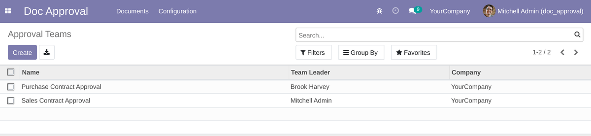
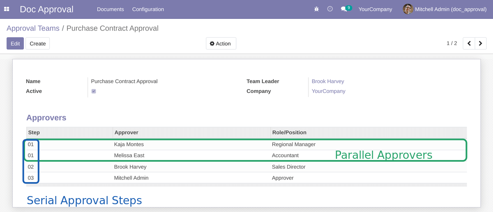
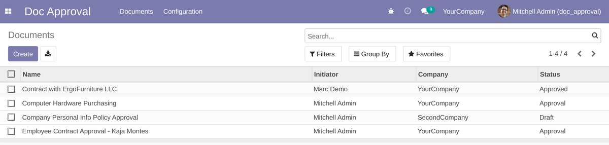
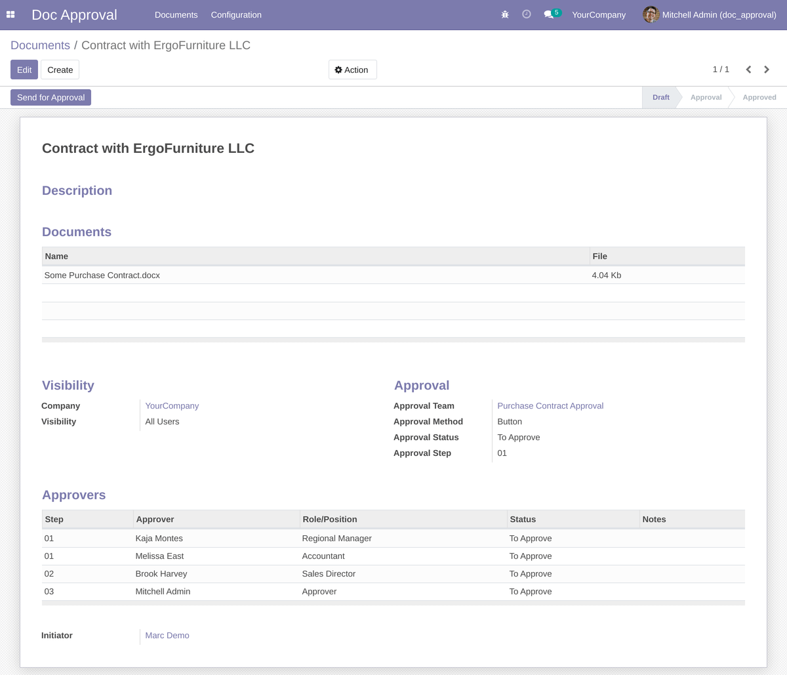
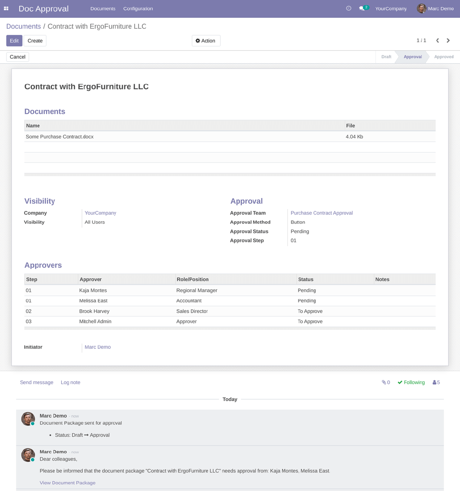
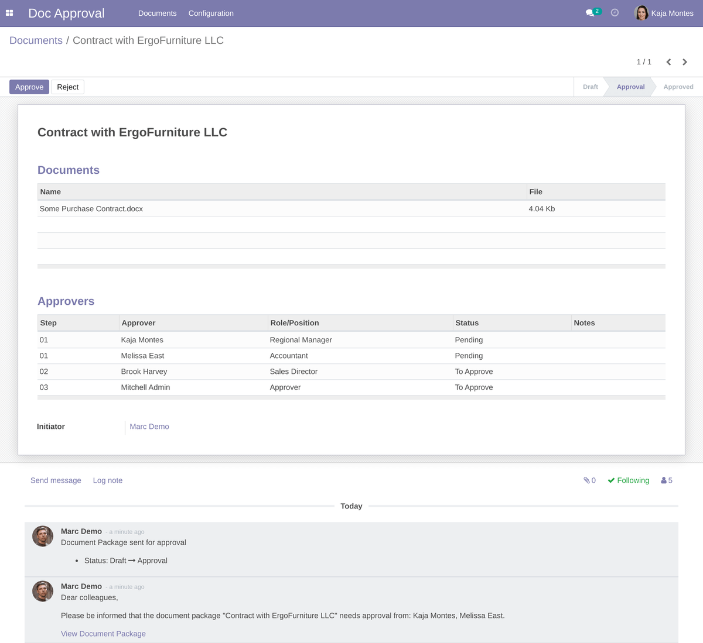
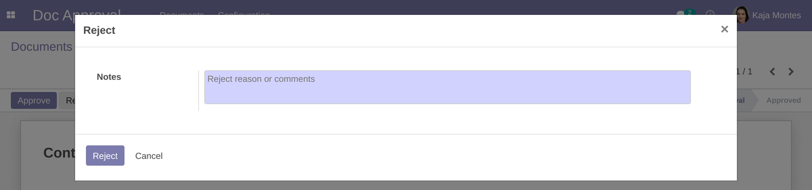
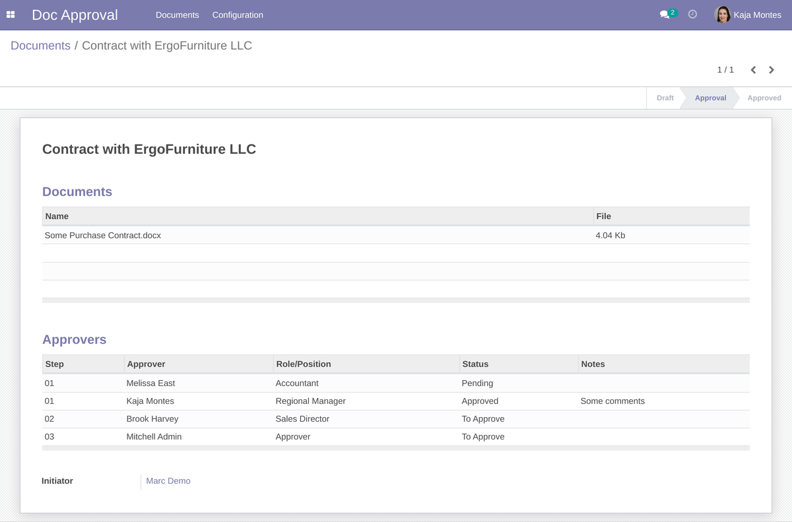
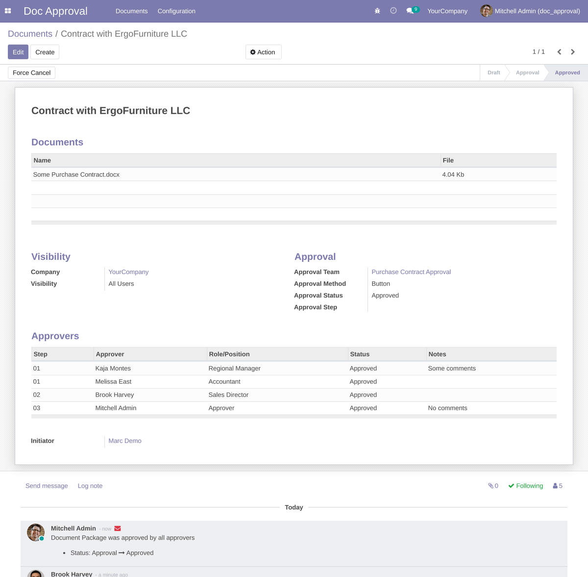

Timovi za odobravanje:
Users with role "Team Leader" can create unlimited approval teams for similar workflows:

Using the "step" option you can configure parallel or serial approval flows.

Document Packages:

Users with role "Initiator" can initiate document approval process. Each document package can contain one or more documents to approve.
Initiator can build own approval route or use pre-defined approval team (with customization option).
The "Visibility" option helps to display documents only for allowed users. Available options are: All Users, Followers, Approvers
If you use multi-company feature you can select company. Documents are displayed according company settings.

After click to "Send for Approval" the system sends notification for approvers and document package goes to the "Approval" stage.

Document Approval Process:
When document is waiting approval from particular user, the user sees the "Approve" and "Reject" buttons

After click to the "Approve" or "Reject" buttons popup window appears. For rejection user's comments are required:


If approver rejects document package, initiator receives notification and can reset document to draft to make corrections.
If approver approves document package, the document goes to next approval stage or will wait for approval from other approvers.

Current approvers have the "Pending" status if the "Approvers" tab.

When document package is fully approved the status becomes as "Approved" and all followers receive notification about that.

Handwritten Signature Functionality
If you want to integrate handwritten signature functionality please install this sub-module: